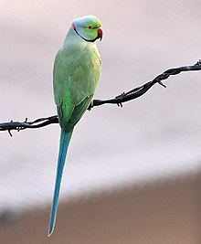
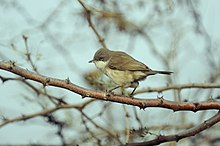

|
Storks |
Storks are large, long-legged, long-necked, wading birds with long, stout bills. Storks are mute, but bill-clattering is an important mode of communication at the nest. Their nests can be large and may be reused for many years. Many species are migratory. |
|
Eagles |
Accipitridae is a family of birds of prey, which includes hawks, eagles, kites, harriers and Old World vultures. These birds have powerful hooked beaks for tearing flesh from their prey, strong legs, powerful talons and keen eyesight. |
|
Dove |
Pigeons and doves constitute the animal family Columbidae and the order Columbiformes, which includes about 42 genera and 310 species. They are stout-bodied birds with short necks, and short slender bills that in some species feature fleshy ceres. They primarily feed on seeds, fruits, and plants. Pigeons and doves are likely the most common birds in the world; the family occurs worldwide, but the greatest variety is in the Indomalaya and Australasia ecozones. |
|  |
Parrot |
Characteristic features of parrots include a strong curved bill, an upright stance, strong legs, and clawed zygodactyl feet. Many parrots are vividly colored, and some are multi-colored. In size they range from 8 cm (3.1 in) to 1 m (3.3 ft) in length. Old World parrots are found from Africa east across south and southeast Asia and Oceania to Australia and New Zealand. |
 |
Owl
|
The barn owl (Tyto alba) is the most widely distributed species of owl and one of the most widespread of all birds. It is also referred to as the common barn owl, to distinguish it from other species in its family, Tytonidae, which forms one of the two main lineages of living owls, the other being the typical owls (Strigidae). The barn owl is found almost everywhere in the world except polar and desert regions, in Asia north of the Himalayas, most of Indonesia, and some Pacific islands.[2] |
 |
Trogon |
The family Trogonidae includes trogons and quetzals. Found in tropical woodlands worldwide, they feed on insects and fruit, and their broad bills and weak legs reflect their diet and arboreal habits. Although their flight is fast, they are reluctant to fly any distance. Trogons have soft, often colourful, feathers with distinctive male and female plumage. There are 33 species worldwide and 3 species which occur in India. |
|
Swallo |
The family Hirundinidae is adapted to aerial feeding. They have a slender streamlined body, long pointed wings and a short bill with a wide gape. The feet are adapted to perching rather than walking, and the front toes are partially joined at the base. |
|
Hornbill
|
Hornbills are a group of birds whose bill is shaped like a cow's horn, but without a twist, sometimes with a casque on the upper mandible. Frequently, the bill is brightly coloured. |
|
Bulbul
|
Bulbuls are medium-sized songbirds. Some are colourful with yellow, red or orange vents, cheeks, throats or supercilia, but most are drab, with uniform olive-brown to black plumage. Some species have distinct crests. |
|  |
Whitethroat
|
The family Sylviidae is a group of small insectivorous passerine birds. They mainly occur as breeding species, as the common name implies, in Europe, Asia and, to a lesser extent, Africa. Many species are difficult to identify by appearance, but many have distinctive songs. |